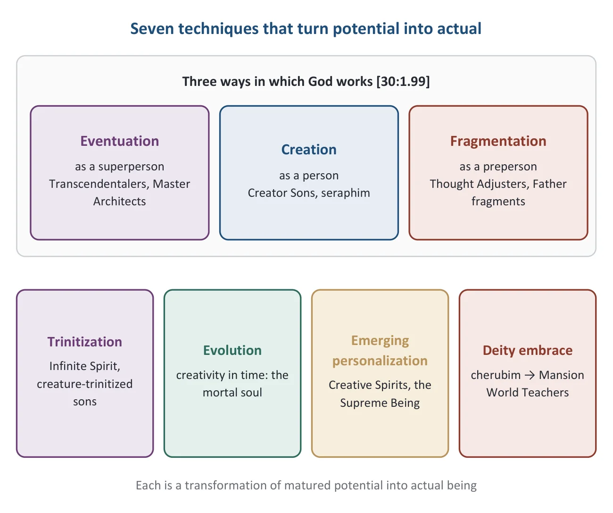

Les techniques de transformation
Original : Annexe VIII, Techniques transformatrices (pp. 249–292)
DANS CE CHAPITRE
Là où l’Annexe VII retraçait la voie par laquelle le potentiel murit, l’Annexe VIII examine les diverses manières dont le potentiel muri devient un être actuel : la création, la trinitisation, l’extériorisation, la fragmentation, l’évolution, la personnalisation émergente et l’embrassement de la Déité. Sadler cherche dans le texte la portée et les limites de chaque technique et les compare, en soulignant que ce qui est créé part d’un statut qui lui a été donné, tandis que ce qui évolue gagne tout par soi-même. Il termine par une note audacieuse qui interprète le phénomène des « quatrièmes créatures » au moyen de la proportion d’hérédité de Mendel.
1. Les nombreuses voies du potentiel à l’actuel (orig., p. 249)
Ceux d’entre nous qui vivent sur un monde évolutionnaire sont habitués au contraste entre la création instantanée et la lente évolution. Pourtant, ce ne sont pas les seules voies par lesquelles des êtres et des choses passent du potentiel à l’actuel. Le Livre d’Urantia dit qu’un seul et même Dieu agit de trois manières distinctes.
En tant que superpersonne, Dieu extériorise. En tant que personne, Dieu crée. En tant que prépersonne, Dieu se fragmente30:1.99
Il faut y ajouter plusieurs autres techniques. Les créateurs et certaines créatures peuvent trinitiser de nouveaux êtres. Dans l’univers local, créateurs et créatures évoluent. L’Esprit Créatif est un être unique, la focalisation de l’Esprit Infini dans l’univers local en voie de devenir personnelle ; et les créatures qui reçoivent un embrassement de la Déité peuvent subir un changement de statut. Sadler rassemble tout cela sous le titre de techniques transformatrices. Quoi qu’il vienne à l’existence, cela ne surgit jamais de rien ; c’est toujours un potentiel qui a été transformé.

2. La technique de la création (orig., pp. 250–260)
La créativité au Paradis et la créativité dans le temps et l’espace
Sadler commence par une mise en garde au sujet de la création. Une procédure qui est la norme dans le temps et l’espace ne vaut pas forcément dans Havona, encore moins au Paradis. Le Livre d’Urantia ne traite pas la faculté de créer comme un attribut divin parmi d’autres.
La faculté de créer n’est guère un attribut de Dieu ; c’est plutôt l’ensemble de sa nature agissante.3:0.3
Sadler prend ici la faculté de créer dans un sens large, qui couvre toute manière d’amener quoi que ce soit à l’existence. Notant que le texte place côte à côte des êtres qui sont « trinitisés, créés, extériorisés, ou éternisés » [13:1.12], il conjecture qu’« éternisés » pourrait désigner un acte supercréatif de la Déité du Paradis.
Sur la création dans le temps et l’espace, le texte est beaucoup plus précis. Quand la Trinité du Paradis active des potentiels statiques, l’Ultimité de la Déité transforme des « potentiels indifférenciés » en plans séparés et définis, et ces plans passent sous la supervision des Maitres Architectes [118:4.6]. Au dernier stade, des êtres finis sont faits à partir du potentiel du Suprême. Les organisateurs de force changent la force d’espace en énergie, les directeurs de pouvoir changent l’énergie en matière, et les Porteurs de Vie déclenchent les changements de la vie dans la matière inanimée [42:1.5]. Les Créateurs Suprêmes font le même genre de travail avec des énergies divines supérieures.
Les frontières de la créativité
Le domaine de la création a-t-il des frontières ? Sadler pense que oui. Sa frontière intérieure se situe là où Dieu, en tant que personne, entre dans des relations subinfinies avec d’autres personnes. Sa frontière extérieure est le « niveau créatif final » sur lequel fonctionne Dieu l’Ultime [0:2.17]. La créativité au sens strict est subinfinie en quantité et subabsolue en qualité ; elle n’opère que dans le domaine de la réalité relative.
Quatre types de création
À l’intérieur de ces frontières, Sadler distingue au moins quatre sortes de créativité.
La première est la créativité illimitée. Le nombre des Fils Créateurs ne cesse d’augmenter, et les Esprits Créatifs continuent sans fin de produire des séraphins. La deuxième est la créativité limitée par des plans. À la différence des Fils Créateurs, les Unions des Jours sont en nombre fixe.
Or nous savons qu’il y a exactement sept-cent-mille Unions des Jours, et qu’il ne s’en crée pas de nouveaux.21:1.4
La raison n’en est pas que la Trinité ne pourrait pas en faire davantage. Une Union des Jours pour chaque univers local correspond exactement au plan, et il n’est pas besoin d’autres. Sadler considère que la plupart des ordres en nombre fixe sont limités exactement de cette manière, par un choix de leurs créateurs.
La troisième est la créativité limitée par les circonstances. Ici, la limite ne réside pas dans la volonté du créateur, mais dans la situation elle-même. Les Sept Maitres Esprits en sont le cas classique.
S’il avait été possible de produire un plus grand nombre de Maitres Esprits, ils auraient été créés, mais il y a juste sept possibilités d’association, et seulement sept, qui soient inhérentes à trois Déités.16:0.1
Même les Déités, observe Sadler, ne modifient pas les mathématiques. La même catégorie comprend l’incapacité du Fils Éternel à transmettre aux Fils Créateurs le pouvoir de faire encore un autre créateur [6:5.4], le nombre fixe des Messagers Solitaires et l’unique Radieuse Étoile du Matin dans chaque univers local.
Mais ces Fils, en union avec les Filles de l’Esprit Infini ne peuvent créer, dans chaque univers, qu’une seule Radieuse Étoile du Matin33:4.2
Sadler suppose que, dans chaque univers local, un certain potentiel fondamental est épuisé par cette première création.
Sadler rassemble à ce point les « êtres modèles et premiers-nés » : le Micaël premier-né, les anges modèles originels, Nambia le premier Porteur de Vie de Nébadon, Gavalia la première Étoile du Soir, et d’autres. Leur position particulière pourrait venir d’une différence de nature créée, ou simplement du fait d’avoir été les premiers. Grandfanda fournit le contraste. En tant que premier mortel à atteindre Havona, Grandfanda n’était probablement pas différent par nature des autres ascendeurs ; il est à la tête du corps des finalitaires mortels simplement parce qu’il est arrivé le premier. Le premier Micaël, en revanche, était très probablement unique dès le moment de sa création, et Sadler penche pour cette opinion.
La quatrième est la créativité réflexe et réflective, dans laquelle l’acte d’un créateur suscite un acte créatif chez un autre. Sadler n’est pas sûr que les deux aillent ensemble, mais il donne un exemple de chacune. Au moment où le Père Universel et le Fils Éternel personnalisent un nouveau Fils Créateur, une « suprême réaction de complément » se produit chez l’Esprit Infini, et le potentiel du futur Esprit consort est séparé [17:6.3]. Sadler trouve dans cette simultanéité la raison pour laquelle notre Micaël est la personnalisation du concept numéro 611 121 et pour laquelle l’Esprit Créatif de Salvington porte le même numéro [33:1.1, 33:3.2]. Son exemple de créativité réflective est celui des Conciliateurs Universels. Quand un Maitre Esprit crée mille servites de Havona, l’Esprit Réflectif qui reflète ce Maitre Esprit dans chaque superunivers produit aussitôt mille conciliateurs, sept-mille en tout [25:2.2].
La création n’est pas la procréation
Sadler ajoute une note qui trace une ligne nette entre création et procréation. Les seuls ordres procréateurs nommés dans le Livre d’Urantia sont les mortels, les Fils Matériels et les médians. La création est production, la venue à l’existence de quelque chose de nouveau ; la procréation est reproduction, la répétition de sa propre espèce. L’intention d’un créateur fixe, dans de larges limites, la nature d’un nouvel être, tandis que l’intention des parents qui procréent détermine seulement qu’un enfant naitra, et non ce que sera sa nature. En ce sens, Sadler considère que l’origine des médians primaires et secondaires est proche de la procréation. Chaque couple a produit mille médians primaires [77:1.5] ou deux-cent-quarante-huit médians secondaires [77:6.4] avant que sa capacité soit épuisée, et toute leur descendance était d’une seule sorte. Ce qui a déterminé la nature de cette descendance, suggère Sadler, ce ne sont pas les parents, mais les plans de créateurs supérieurs.
3. La technique de la trinitisation (orig., pp. 260–269)
En quoi la trinitisation diffère de la création
La trinitisation ressemble à la création en ce qu’elle fait apparaitre de nouveaux êtres. Sadler y voit néanmoins au moins deux différences. La création n’est pas un secret, mais la trinitisation fait partie des secrets de Vicegerington et de Solitarington [13:1.12]. Et, alors que la création est confinée aux niveaux subabsolus, la trinitisation ne l’est pas, car l’Esprit Infini, apparu par la première trinitisation, se tient comme un égal à côté du Père et du Fils.
Sadler trouve le mot « trinitisation » employé en trois sens dans le texte : l’embrassement de la Trinité, la trinitisation illimitée et la trinitisation limitée.
L’embrassement de la Trinité
Le texte appelle aussi trinitisation l’embrassement de certaines créatures par la Trinité du Paradis. Les Fils d’Aboutissement Trinitisés, les Fils de Sélection Trinitisés et les Fils de Perfection Trinitisés naissent de cette manière et sont affectés aux gouvernements des superunivers. L’embrassement élève le statut, mais fige la croissance.
car l’embrassement de la Trinité semble avoir pour effet de précipiter hors du courant du futur beaucoup de potentiels non réalisés des créatures.22:4.5
Comme une substance dissoute se dépose hors d’une solution, ce qui aurait été atteint un jour se solidifie tout d’un coup dans le présent. Dans les termes de Sadler, le finalitaire embrassé reçoit d’avance ce qu’il aurait fini par acquérir comme esprit du septième stade [40:10.12].
Trinitisation illimitée et trinitisation limitée
La différence entre les deux autres sens apparait clairement dans un tableau.
| Aspect | Création | Trinitisation illimitée | Trinitisation limitée |
|---|---|---|---|
| Qui agit | Un créateur | Les Déités du Paradis (deux ou trois) | Le Père et le Fils ; deux créatures qualifiées |
| Effet sur les parents | Aucun | Aucun | Les parents deviennent un, d’une certaine manière |
| Statut de la descendance | Inférieur à celui du créateur | Non égal à celui des parents | Égal en statut à celui des parents |
| Répétition | Possible | Sans limite | Une seule fois |
Les créatures glorifiées qui s’engagent dans de telles aventures de trinitisation ne peuvent participer qu’à une seule expérience de ce genre, tandis que pour les Déités du Paradis il semble qu’il n’y ait aucune limite au déroulement continu de leurs épisodes de trinitisation.22:7.3
Sadler croit que les Fils trinitisés par la Déité non révélés sont apparus par une trinitisation illimitée. Il note aussi que le texte emploie parfois le mot de façon lâche, presque comme un synonyme de création, comme lorsqu’il dit que les Anciens des Jours ont tous été trinitisés au même moment [18:3.4].
Le prototype de la trinitisation limitée est l’origine de l’Esprit Infini. Après cet évènement, le Père et le Fils sont devenus un en tant que Père-Fils ; l’Esprit Infini est une Déité qui leur est égale ; et il ne peut y avoir de second Esprit Infini. Sadler conçoit ce premier évènement en trois temps, dualisation, trinitisation et formation de la Trinité, mais il soutient que cet ordre n’est que conceptuel : en fait, les trois se sont produits ensemble, et à aucun moment la Déité n’a été divisée. Transposé plus bas dans l’échelle, le même principe se lit comme suit. Quand deux Déités infinies trinitisent, une troisième Déité infinie apparait. Quand deux créateurs subinfinis trinitisent, il en résulterait un troisième créateur subinfini. Le texte rapporte seulement l’opinion selon laquelle, dans les âges futurs, une union plus étroite pourrait se réaliser entre un Fils Créateur et une Divine Ministre [56:7.7] ; Sadler y lit une trinitisation par deux créateurs. Et, quand deux créatures trinitisent, il en résulte une troisième créature.
La portée temporelle de la trinitisation par des créatures
Sadler remarque ici un renversement intrigant. Un Fils Créateur manie le potentiel de façon beaucoup plus profonde et plus large que n’importe quelle paire de créatures. Pourtant, sur l’axe des âges, il est plus étroitement lié, car, en devenant Maitre Fils, il renonce au pouvoir de créer des types entièrement nouveaux de créatures dans le présent âge de l’univers [21:5.6]. La trinitisation par des créatures, en revanche, n’est pas liée aux besoins de l’âge présent. Elle amène à l’actualité, avant le temps, des potentiels du Suprême non encore réalisés, et son but semble être la préparation des âges futurs.
Sadler divise les fils trinitisés par des créatures en deux groupes. Les fils trinitisés par des ascendeurs incorporent des potentiels spirituels du Tout-Puissant Suprême, les fils trinitisés du Paradis-Havona ceux du Suprême, et les deux groupes sont donc des fils « post-suprêmes ». Ils servent dans les circuits intérieurs de Havona, sur les mondes paradisiaques de l’Esprit Infini et dans les univers locaux, et ils travailleront plus tard comme Corps des Finalitaires Trinitisés dans l’espace extérieur ou se rassembleront aux sièges des superunivers à la fin de cet âge. Les fils de la destinée trinitisés, trinitisés conjointement par un finalitaire et un citoyen du Paradis-Havona, incorporent le Mental Suprême-Ultime et sont donc des fils « post-ultimes » [22:7.14]. Ils ne peuvent servir dans les univers présents ; ils se retirent sur Vicegerington sous la garde des Architectes du Maitre Univers. La conclusion de Sadler est que les créations des créateurs sont adaptées aux besoins de l’âge présent, tandis que les trinitisations des créatures sont tournées vers les âges à venir.
4. La technique de l’extériorisation (orig., pp. 269–274)
Pourquoi « s’extérioriser » ?
Extériorisation est le mot employé pour la manière dont les Transcendantaux viennent à l’existence. Le texte dit que ses auteurs connaissent leur origine mais ont reçu l’instruction de ne pas la révéler [31:9.2] ; il explique pourtant pourquoi ce mot particulier a été choisi.
Ces Transcendantaux ne créent pas d’êtres, et eux-mêmes n’ont jamais été créés. En parlant de leur origine, et pour éviter l’emploi d’un nouveau terme — d’une désignation arbitraire et dépourvue de sens — nous croyons préférable de dire simplement que les Transcendantaux s’extériorisent.31:8.3
Sadler raisonne qu’un mot choisi précisément pour éviter l’absence de sens doit porter un sens, et il consulte le sens que le dictionnaire donne à l’anglais eventuate (s’extérioriser) : se produire finalement, résulter. Sa racine, event (évènement), désigne en théorie de la relativité un fait survenant en un seul point de l’espace-temps. L’emploi du texte le plus proche de ce sens est le suivant.
Entre deux objets, il existe des relations, mais trois objets ou davantage aboutissent à un système112:1.17
Personne ne planifie ni ne construit un système. Quand trois choses ou davantage se trouvent dans un même cadre, un système surgit tout simplement. La description que donne le texte de la Trinité comme réalité superadditive « issue » de l’union des trois Déités du Paradis [104:2.4] emploie le mot de la même manière. S’extérioriser, c’est se produire inévitablement, parce que le résultat était latent depuis toujours dans la situation.
La compossibilité et les plans de Dieu
Sadler relie cette intuition au principe de cohérence. Le texte dit que l’omnipotence comporte un corollaire appelé « compossibilité ».
Dans le cadre espace-temps, et en se plaçant au point de vue intellectuel de la compréhension mortelle, même le Dieu infini ne peut créer des cercles carrés ni produire du mal qui soit naturellement bon.118:5.1
Une fois que Dieu fait un cercle, la circularité devient la nature de tout cercle, et un cercle carré est impossible. De même, Dieu ne « crée » pas la fraternité par un acte séparé : dès l’instant où il devient le Père de toutes les personnes, la fraternité découle d’elle-même de cette paternité [12:7.10]. Sur la foi de ces deux exemples, Sadler propose une analogie. Quand Dieu forme un plan, tout ce qui est éternellement requis pour la mise en route, la réalisation et la consommation de ce plan apparait avec lui, inévitablement ; sinon, ce ne serait pas un plan, mais une rêverie. Dans une tournure spirituelle, Sadler dit que Dieu connait assez bien le mode subjonctif, mais pense et planifie à l’« indicatif éternel ».
Vus sous ce jour, les Architectes du Maitre Univers sont des êtres apparus conformément au concept que Dieu s’est fait du maitre univers au moment où il l’a conçu. Ils ne sont pas des créatures, puisqu’ils n’ont jamais été créés, et ils ne sont pas des créateurs, puisqu’ils ne créent pas. Sadler les appelle des « initiateurs » (inceptors) : des êtres qui ouvrent l’œuvre longtemps avant que les créateurs n’entrent sur la scène de l’espace. Prenant pour indice la remarque du texte selon laquelle l’Absolu de Déité a peut-être eu une part dans l’origine des Transcendantaux [31:8.3], il conjecture en outre que le plan de Dieu, passant par la Trinité, a trouvé un écho dans l’Absolu de Déité, et que l’Absolu de Déité a alors précipité hors du potentiel les êtres que le plan requérait. Sadler lui-même qualifie tout cela de raisonnement spéculatif.
5. La technique de la fragmentation (orig., pp. 274–276)
Les Ajusteurs et les autres fragments du Père viennent à l’existence par fragmentation. Sadler y rattache trois cas dans lesquels l’esprit divin est individualisé. Premièrement, l’Esprit Infini et les Esprits Créatifs fragmentent un esprit prémental, et les ascendeurs fusionnés avec un tel esprit deviennent des mortels fusionnés avec l’Esprit. Deuxièmement, le Fils Éternel ne peut se fragmenter lui-même, mais un Fils Créateur peut individualiser une portion de son esprit, et ceux qui fusionnent avec elle deviennent des mortels fusionnés avec le Fils [30:1.102]. Troisièmement, le Père Universel, sur le niveau prépersonnel, détache des fragments de sa nature de Déité, et ceux qui fusionnent avec un tel Ajusteur deviennent des mortels fusionnés avec le Père.
La fragmentation a, elle aussi, son secret : c’est le secret de Divinington. Un Ajusteur est subinfini en quantité, mais il est Déité non diluée en qualité [107:1.2]. Les Ajusteurs Personnalisés atteignent un statut unique.
Ils sont omnipersonnels — ils sont avant la personnalité, ils sont la personnalité et ils sont après la personnalité.109:7.4
6. La technique de l’évolution (orig., pp. 276–279)
La créativité dans le temps
Sadler définit l’évolution comme la créativité dans le temps. Parce que le temps divise un processus en petites étapes, les créatures qui s’y trouvent peuvent percevoir le changement, le comprendre dans une certaine mesure et y prendre part directement. L’évolution a aussi son secret, le secret d’Ascendington : le mystère de l’âme immortelle qui croît dans le mental mortel [13:1.22].
La différence entre création et évolution réside dans le point de départ. Un être créé part d’un statut qu’il n’a pas gagné ; un être qui évolue gagne tout ce qu’il a. Sadler donne trois exemples. Les Anciens des Jours, parfaits par la seule création, illustrent la création pure. Les séraphins, qui partent d’un statut créé et croissent jusqu’à devenir coordonnés avec les seconaphins, illustrent la création plus l’évolution. Les mortels illustrent l’évolution pure : nés de parents, ils acquièrent un à un les statuts de fils par la foi, de fils ascendant, d’être spirituel, de pèlerin de Havona, d’arrivant au Paradis et de finalitaire. Même la venue de l’Ajusteur attend la première décision morale.
L’évolution produit des valeurs que la création ne peut produire. Des Conseillers Techniques, le texte dit :
Il était impossible de créer une telle bibliothèque vivante de loi appliquée ; il faut que de tels êtres évoluent par expérience effective.25:4.16
Décision et action : le mécanisme pratique de la croissance
Comment, alors, une personne croît-elle effectivement ? Sadler part d’une brève prescription du texte.
Les clefs du royaume des cieux sont la sincérité, plus de sincérité et encore plus de sincérité. Tous les hommes possèdent ces clefs. Les hommes s’en servent — élèvent leur statut spirituel — par des décisions, plus de décisions et encore plus de décisions.39:4.14
Ailleurs, le texte appelle l’action « l’exécution des décisions » [110:6.17]. Sadler déploie cela en trois étapes : la croissance commence par l’honnêteté, se réalise par le courage et s’achève en faisant effectivement quelque chose. Si la vie est un processus qui se déroule entre un organisme et son environnement [112:1.13], alors la décision suivie de l’action accélère l’échange entre le moi et son environnement. Pour une créature finie, cet environnement est en fin de compte l’immanence du Suprême. Ainsi, selon l’interprétation de Sadler, la croissance finie consiste à « absorber » le potentiel du Suprême par la décision et à le « digérer » en actualité par l’action. C’est l’Ajusteur qui construit l’âme, mais la personnalité elle-même a une qualité créatrice, « l’évolution de la maitrise » [112:2.15]. L’environnement n’est pas non plus passif.
Ainsi, tandis que nous cherchons à exprimer notre moi, le Suprême s’efforce en nous et avec nous d’exprimer la déité.117:4.6
7. La personnalisation émergente (orig., pp. 279–287)
Des origines non conventionnelles de la personnalité
La personnalité ne surgit pas d’elle-même.
mais jamais l’impersonnel ne se transmue directement en personnel. La personnalité n’est jamais spontanée ; elle est le don du Père du Paradis.0:5.4
Le texte parle de deux types de personnalité, celle de la Source Première et celle de la Troisième Source [9:8.10]. Sadler identifie cependant deux cas qui ne correspondent ni à l’un ni à l’autre. L’un est l’Esprit Créatif, dont il est dit que ces Esprits forment « une classe par eux-mêmes » [9:8.11] ; l’autre est la Déité expérientielle, qui traverse encore « les époques prépersonnelles où se développe le pouvoir expérientiel » [10:5.5]. Parce que la personnalité se fait jour progressivement chez l’un et l’autre, Sadler appelle cela la « personnalisation émergente ».
Les sept stades d’un Esprit Créatif
Sadler regroupe en quatre ensembles les sept stades d’un Esprit Créatif décrits au fascicule 17. Dans les trois premiers stades, l’Esprit est prépersonnel. Elle commence comme un potentiel séparé au sein de l’Esprit Infini, reçoit une éducation préliminaire sur les circuits de Havona et, en réponse à la « prière d’identification » d’un Maitre Esprit, apparait pour la première fois comme une entité distincte et part avec un Fils Créateur vers un univers local. Au quatrième stade, quand l’intention de créer la vie est déclarée, les cérémonies de personnalisation ont lieu au Paradis, et, avec « l’éruption primaire », elle est personnalisée pour la première fois [17:6.7]. Aux cinquième et sixième stades, à la suite de la « Proclamation finale d’Égalité » [33:3.6] du Fils Créateur, ses qualités personnelles s’accroissent encore. Le septième stade est la « carrière non révélée » [17:6.10].

Sadler fait remarquer avec soin que nulle part le texte n’appelle un Esprit Créatif une personne sans quelque réserve. Il dit seulement que le Fils Créateur la considère comme une personne, qu’elle est une personne « à toutes fins utiles » et qu’elle atteint le statut de personnalité. Sadler ne pense pas que ces réserves soient accidentelles. Il infère qu’à partir du quatrième stade l’Esprit Créatif est une personne en devenir, et que sa personnalisation ne sera achevée qu’au septième stade. Le moment, suggère-t-il, sera celui où chacun des sept-cent-mille univers locaux sera ancré dans la lumière et la vie, c’est-à-dire celui où l’Être Suprême émergera.
Une répétition de l’Esprit Infini
Sadler avance maintenant une théorie audacieuse : dans le temps et l’espace, l’Esprit Créatif reproduit ce que l’Esprit Infini a fait jadis au Paradis dans l’éternité.
L’Esprit Infini imprègne tous les univers du temps et de l’espace, mais il opère du siège de chaque univers local sous forme d’une focalisation spécialisée acquérant les qualités de la pleine personnalité par la technique de coopération créative avec le Fils Créateur.33:3.1
Sadler note que le texte appelle l’Esprit Infini, à l’époque où Havona est apparu, « l’agent exécutif » de l’association Père-Fils [8:1.3], et il y voit l’indice d’une personnalité non encore achevée. Si Havona avait été créé par étapes, on aurait pu observer l’Esprit Infini dans ce qui aurait ressemblé au processus de devenir une personne. Mais la création centrale est apparue tout d’un coup comme une existence éternelle, et il en fut de même de l’Esprit Infini.
Des Déités qui dépendent de leurs créations
De cette comparaison, Sadler tire une généralisation qui répartit les créateurs et les Déités en deux catégories.
| Catégorie | Exemples | Quand la personnalité est complète |
|---|---|---|
| Personnels indépendamment d’une création | Le Fils Éternel, les Fils Créateurs, les Sept Maitres Esprits | Avant que leurs créations ne soient achevées |
| Personnalisés en dépendance d’une création | L’Esprit Infini | Quand Havona est apparu dans l’éternité |
| De même | Les Esprits Créatifs | Quand tous les univers locaux seront rendus parfaits |
| De même | L’Être Suprême | Quand les sept superunivers seront achevés |
| De même | Dieu l’Ultime | Quand le maitre univers sera achevé |
| De même | Dieu l’Absolu | Quand apparaitront les domaines intérieurs du Cosmos Infini (conjecture de Sadler) |
Selon le texte, la nature spirituelle et la personnalité de Dieu le Suprême ont leur source dans la Trinité du Paradis [0:8.10]. Il relate aussi que, lorsque l’Être Suprême a agi pour la première fois de manière créative, après la création des Esprits Réflectifs, une réaction s’est produite chez l’Absolu de Déité, qui lui a attribué « de nouvelles prérogatives de personnalité » [17:2.2]. Sadler y trouve un étroit parallèle avec la personnalisation progressive d’un Esprit Créatif.
8. L’embrassement de la Déité (orig., pp. 287–288)
L’embrassement de la Déité ressemble à l’embrassement de la Trinité, mais, s’il change le statut, il n’arrête pas la croissance ultérieure. Le texte n’en donne que trois exemples. Les chérubins et les sanobins laissés derrière eux quand leurs séniors séraphiques partent sont embrassés par l’Esprit Créatif et deviennent Éducateurs des Mondes des Maisons ; après un long service, ils peuvent être embrassés de nouveau et devenir séraphins [38:8.5–6]. Le troisième exemple a lieu au Paradis.
recevoir le privilège du « contact personnel » avec la Brillance Centrale du Paradis, être embrassé par les Personnes Lumineuses et disparaitre du champ de reconnaissance de ses compagnons spirituels pour ne jamais reparaitre parmi ses semblables.24:7.2
Les servites de Havona qui disparaissent de cette manière semblent devenir Guides de Diplômés. Sadler avoue qu’il ne sait pas à quoi se réfèrent les expressions « Brillance Centrale du Paradis » et « Personnes Lumineuses ». Comme le texte est hautement précis chaque fois qu’il choisit de l’être, il juge que ce flou est délibéré. Lorsqu’une explication plus complète exigerait de révéler plus qu’il n’est prévu, le texte choisit l’ambiguïté, restant fidèle aux faits tout en laissant place à l’interprétation du lecteur.
9. Note : les quatrièmes créatures et la proportion de Mendel (orig., pp. 288–292)
Une expérience avec huit pions
Dans la note finale de l’annexe, Sadler se tourne vers la génétique. Mettez quatre pions blancs et quatre pions noirs dans un chapeau, tirez-les deux par deux pour former des paires, et recommencez de nombreuses fois : les résultats tendent vers une paire blanc-blanc, deux paires blanc-noir et une paire noir-noir. C’est la formule bien connue (a+b)² = a² + 2ab + b². C’est la même proportion de 3 pour 1 que Mendel obtint en croisant des pois de grande taille avec des pois de petite taille. Parce que le caractère dominant masque le récessif, trois sur quatre se ressemblent extérieurement, bien qu’en fait ils comprennent une lignée pure et deux hybrides.
Le Livre d’Urantia ne mentionne jamais Mendel, mais il emploie bien l’expression « quatrièmes créatures ». Sadler observe qu’« un sur quatre » n’est qu’une autre manière de dire « trois pour un ».
Dans la création de Servites de Havona, la loi de prédominance de l’esprit prévaut. La proportion établie fournit trois êtres spirituels pour un semi-physique.25:1.4

Quatre cas
Sadler trouve quatre exemples dans le texte. Premièrement, les servites de Havona sont produits par les Maitres Esprits agissant conjointement avec les Directeurs Suprêmes de Pouvoir, de sorte qu’ils héritent à la fois d’un facteur spirituel (S) et d’un facteur physique (p). Notant que les servites qui deviennent Guides de Diplômés représentent « près du quart », Sadler suppose qu’il s’agit du membre pur (SS) parmi chaque groupe de trois servites spirituels extérieurement semblables. Deuxièmement, les Conciliateurs Universels servent par groupes de quatre. Selon la lecture de Sadler, le juge-arbitre est purement spirituel (SS), l’exécuteur divin semi-matériel est la quatrième créature (pp), et les deux autres sont des hybrides [25:2.5].
Le troisième cas est un exemple de dominance physique.
Chaque fois qu’ils avaient quatre nouveaux enfants, le quatrième était d’un ordre exceptionnel. Il était souvent invisible.77:5.6
Des soixante-sept enfants d’Adamson et de Ratta, seize étaient de tels « quatrièmes enfants », et ils devinrent les parents des médians secondaires. Seize sur soixante-sept font 23,88 pour cent, proche des 25 pour cent théoriques. Sadler va plus loin et se demande si la perte de ce facteur latent spirituel pour la race humaine pourrait expliquer pourquoi les Grecs, descendants des Adamsonites, ont excellé dans l’art et la philosophie tout en restant en retrait dans la religion. Cette idée n’a aucun fondement dans le texte, et Sadler lui-même la laisse à l’état de question.
Quatrièmement, les chérubins et les sanobins ont aussi des quatrièmes créatures.
Chaque quatrième chérubin et chaque quatrième sanobin sont quasi matériels ; ils se rapprochent très nettement du niveau morontiel d’existence.38:7.6
Puisque ces êtres viennent d’un seul Esprit Créatif, il semblerait n’y avoir qu’un seul facteur héréditaire. Sadler trouve sa réponse dans le fait que l’Esprit Créatif fonctionne comme créateur non seulement dans le domaine spirituel, mais aussi dans le domaine morontiel. Il fait alors correspondre la division des chérubins en trois classes que donne le texte, candidats à l’ascension, chérubins de phase intermédiaire et chérubins morontiels [38:8.1], au schéma 1:2:1 de SS, Sm et mm. Sadler conclut en suggérant que ce principe pourrait être largement à l’œuvre parmi de nombreux ordres que le texte ne mentionne pas.
Sadler et le texte
L’application de la proportion de Mendel est l’interprétation personnelle de Sadler, fondée sur les « quatrièmes créatures » du texte et sur son chiffre de trois pour un. Ce que le texte lui-même affirme se limite à ceci : les servites de Havona, les commissions de conciliation, ainsi que les chérubins et les sanobins ont des quatrièmes créatures [38:7.6], et chaque quatrième enfant d’Adamson était inhabituel. Que les servites de lignée pure deviennent Guides de Diplômés, ainsi que la question sur la civilisation grecque, sont des conjectures sur des matières laissées non révélées. Par ailleurs, la référence 38:4.6 que donne l’original pour le second embrassement des chérubins semble désigner 38:8.6.
Points clés
- Les êtres et les choses passent du potentiel à l’actuel par plus de voies que la création et l’évolution. Sadler distingue sept techniques : la création, la trinitisation, l’extériorisation, la fragmentation, l’évolution, la personnalisation émergente et l’embrassement de la Déité.
- Le domaine de la création se situe entre les relations de Dieu en tant que personne (la frontière intérieure) et le niveau créatif final de Dieu l’Ultime (la frontière extérieure). Il comprend quatre types : la créativité illimitée, la créativité limitée par des plans, la créativité limitée par les circonstances et la créativité réflexe.
- La trinitisation fait partie des secrets et n’est pas confinée aux niveaux subabsolus. La trinitisation limitée unit les parents, produit une descendance qui leur est égale et ne peut avoir lieu qu’une seule fois.
- La trinitisation par des créatures a une portée temporelle plus large que les créations des créateurs, puisqu’elle regarde au-delà des besoins de l’âge présent vers les âges post-suprêmes et post-ultimes.
- L’extériorisation est l’apparition inévitable de ce qui était latent dans les plans de Dieu ; Sadler infère que les Transcendantaux, n’étant ni créateurs ni créatures, sont mieux appelés « initiateurs » (inceptors).
- L’évolution est la créativité dans le temps. Un être qui évolue gagne tout par lui-même et croît en transformant le potentiel du Suprême en actualité par la décision et l’action.
- Sadler généralise en disant que les Esprits Créatifs, l’Esprit Infini et les Déités expérientielles achèvent leur personnalisation quand leurs créations sont achevées.
- Sadler interprète les « quatrièmes créatures » à l’aide de la proportion de 3 pour 1 de Mendel, interprétation que le texte lui-même n’énonce pas.